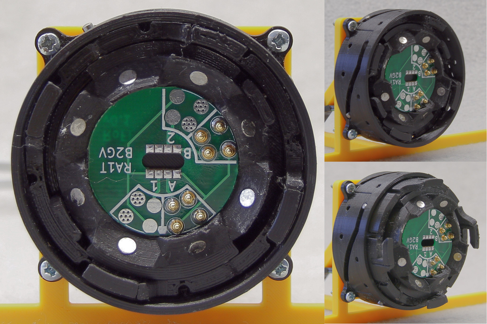
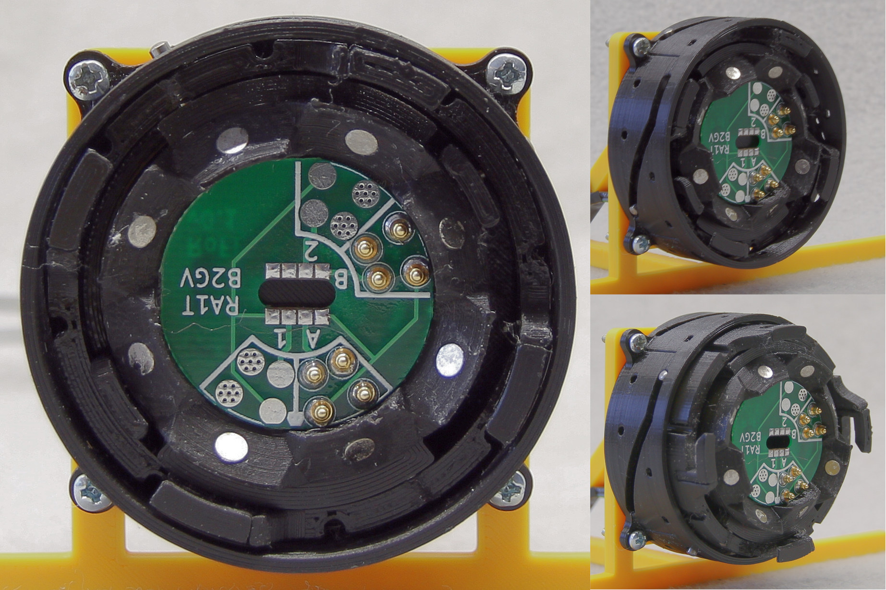

Fault-tolerance for Metamorphic Robots
Jan Mrázek
January 28, 2021
Robots & Automation
Today's society is built on robots & automation.


They make things cheap, but making them is expensive:
- tedious to design and manufacture,
- usually hand-crafted for single task, cannot be repurposed.
Solution: Modular Robotics
Modular robots
organs

Universal
Metamorphic robots
cells

Challenges of Metamorphic Robots
Area of My PhD Study
Hardware challenges
- module design & miniaturization
- bringing cost down & mass-production
Challenges of the distributed nature
- massive communication in unstable topology
- computationally weak modules
- fault-tolerance of the control mechanism
Algorithmic challenges
- self-assembly & reconfiguration
- task specification & task formalization
"Be ready when the hardware guys finish their job."
The Goals
How to design controllers that...
- can recover from partial module malfunction?
- can overcome faulty readings from sensors?
- (possibly) are tolerant for malicious modules?
Propose algorithms & design techniques for controllers
- leverage distributed nature of the system (no single point of failure)
- propose suitable communication schemes and protocols
Validate such controllers, show that they work in the physical systems
I Want To Validate My Research
Good news! There are plenty of existing projects:


...however, you cannot buy them nor build them.
Additional Goal

- develop a robotic platform for result validation
- make it open & well-supported so the community can benefit from it
Achieved results: RoFI Platform
 


- our open-platform for metamorphic robots
- practically state-of-the-art in "one package"
- reusable connector – RoFICoM
- unique shape to allow for easy reconfiguration & reasoning about RoFIBots
- a set of rules to define modules' shape
- designed for research purposes
- easily programmable
- ecosystem of tools
- the first fully open design
Reconfiguration via reduction to SMT
How to find a reconfiguration plan? Traditional approaches:
- state-space exploration (A*, RRT)
- disconnect & reconnect
- motion-primitives
- ...
Inspired by software verification: reduce the problem to SMT
- build a first order logic formula that is satisfiable iff there is a reconfiguration path
- pass it SMT solver (leverage its heuristics)
- extract solution
Works for small configuration, shows potential with newer version of solvers
Next steps: roller case-study
How to move in such configuration?
How to handle modules malfunctions?
- replicate results of current state-of-the-art on RoFI
- model potential failures of the system
- transform the controller to distributed one
Next steps: walker case-study

Apply findings from previous case study
- generalize findings
- propose general approaches to fault-tolerant control
Summary
Metamorphic robots could be revolution in robotics. But we are not there yet.
What we focus on:
- distributed control of such robots
- fault-tolerance of such robots
What we already did:
- explore the area of modular robots, find suitable subarea
- experimented with unconventional approach to reconfiguration
- presented suitable platform
What remains to be done:
- perform case-studies on distributed control
- propose algorithms & design techniques
Questions
Je možné v případě řešešení fatální poruchy (např. napájení motorů, přerušení komunikace) při spojených dvou modulech RoFI jednoho z nich odpojit jednostranně na RoFICoM?
Ano, je to možné. Je to jedna z předností našeho designu konektoru:
- Pro spojení musí obě strany souhlasit (změnit pozici na "spojeno")
- Pro spojení není vyžadována časová synchronizace
- Libovolná strana může spojení ukončit bez participace protistrany
Questions
V práci uvádíte, že se hodláte zaměřit na distribuované řízení a vyhnout se otázkám spojeným s rekonfigurací robota. Jaké druhy selhání je možné řešit touto cestou?
Celý systém RoFI je navržen tak, aby mohl interagovat s pasivními prvky. Tedy i kompletně mrtvý modul, který je již zapojen do systému lze používat, avšak:
- nemusí umožňovat pohyb
- reportuje falešná data
- nepřenáší komunikaci
Questions
Důležitou otázkou pro řízení systémů při poruše je co nejpřesnější identifikace poruchy a jejího dopadu na systém. Předpokládáte nějaké postupy pro diagnostiku systému a nastalého nebo blížicího se selhání?
- Do určité míry se RoFI moduly umí sebe-diagnostikovat (např. funkčnost motorů), pokud je třeba;
- avšak ne vždy dává smysl identifikovat konkrétní selhání a přímo je řešit – např. protokoly založené na digitálních hormonech to nevyžadují a tolerantnost vůči chybám mají "v sobě zabudovanou".
Questions
V případě selhání senzorů s enabízí možnost redundance pomocí virtuálních sezorů. Je takový přístup možná v případě modulárního robota?
Myslím si, že tento přístup je možný. Je jen kompikovanější kvůli distribuovanému prostředí.
Předpokládáte jeho využít?
Zatím jsem o něm neuvažoval jako o primární metodě.